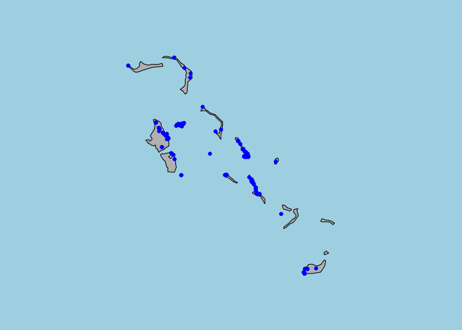
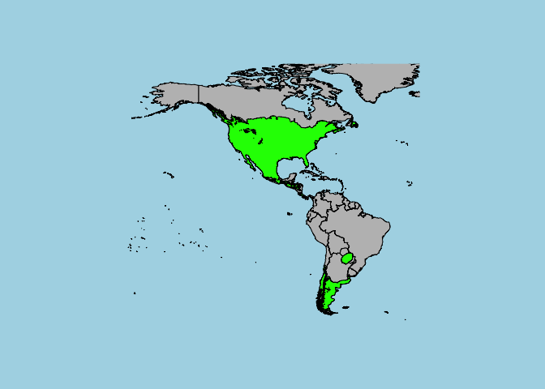
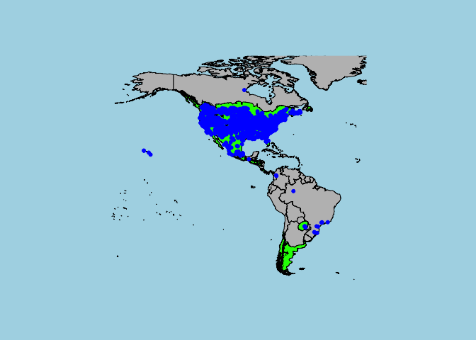

RBIEN Tutorial
Brian Maitner
The R Script associated with this page is available here. Download this file and open it (or copy-paste into a new script) with RStudio so you can follow along.
1 Setup
#install_github("bmaitner/RBIEN/BIEN")
library(BIEN)
library(ape) #Package for working with phylogenies in R
library(maps) #Useful for making quick maps of occurrences
library(sp) # A package for spatial data2 Overview
It is often easiest to start with our vignette. Particularly useful are the “Function Names” and “Function Directory” sections.
vignette("BRI")The function names follow a consistent naming strategy, and mostly consist of 3 parts:
- The prefix “BIEN_”
- The type of data being accessed, e.g. “occurrence_”
- How you’ll be querying the data. For example, the suffix “state” refers to functions that return data for a specified state.
As a complete example, the function BIEN_occurrence_species returns occurrence records for a given species (or set of species).
3 Function Families
Currently we have 10 function families in RBIEN. These are sets of functions that access a given type of data.
- occurrence records (BIEN_occurrence_…)
- range maps (BIEN_ranges_…)
- plot data (BIEN_plot_…)
- trait data (BIEN_trait_…)
- taxonomic information (BIEN_taxonomy_…)
- phylogenies (BIEN_phylogeny_…)
- stem data (BIEN_stem_…)
- species lists (BIEN_list_…)
- metadata (BIEN_metadata_…)
- custom queries (BIEN_sql)
We’ll walk through each of the function families and take a look at some the options available within each.
4 Occurrence records
These functions begin with the prefix “BIEN_occurrence_” and allow you to query occurrences by either taxonomy or geography. Functions include:
BIEN_occurrence_countryReturns all occurrence records within a given countryBIEN_occurrence_stateReturns all occurrences records within a given state/provinceBIEN_occurrence_countyReturns all occurrences records within a given state/provinceBIEN_occurrence_familyReturns all occurrence records for a specified familyBIEN_occurrence_genusReturns all occurrence records for a specified genusBIEN_occurrence_speciesReturns all occurrence records for a specified speciesBIEN_occurrence_stateReturns all occurrences records within a given state/province
Each of these functions has a number of different arguments that modify your query, either refining your search criteria or returning more data for each record. These arguments include:
cultivatedIf TRUE, records known to be cultivated will be returned.only.new.worldIf TRUE, records returned are limited to those in North and South America, where greater data cleaing and validation has been done.
- Note that the arguments cultivated and only.new.world may change the number of records returned.
all.taxonomyIf TRUE, the query will return additional taxonomic data, including the uncorrected taxonomic information for those records.native.statusIf TRUE, additional information will be returned regarding whether a species is native in a given region.observation.typeIf TRUE, the query will return whether each record is from either a plot or a specimen. This may be useful if a user believes one type of information may be more accurate.political.boundariesIf TRUE, the query will return information on which country, state, etc. that an occurrence is found within.print.queryIf TRUE, the function will print the SQL query that it used. This is mostly useful for users looking to create their own custom queries (which should be done with caution).
4.1 Example 1: Occurrence records for a species
Okay, enough reading. Let’s get some data.
Let’s say we’re interested in the species Xanthium strumarium and we’d like some occurrence data.
Xanthium_strumarium <- BIEN_occurrence_species(species = "Xanthium strumarium")#View(Xanthium_strumarium)
head(Xanthium_strumarium)
str(Xanthium_strumarium)The default data that is returned consists of the latitude, longitude and date collected, along with a set of attribution data. If we want more information on these occurrences, we just need to change the arguments:
Xanthium_strumarium_full <- BIEN_occurrence_species(species = "Xanthium strumarium",cultivated = T,only.new.world = F,all.taxonomy = T,native.status = T,observation.type = T,political.boundaries = T)
str(Xanthium_strumarium_full)## 'data.frame': 6356 obs. of 33 variables:
## $ scrubbed_species_binomial : chr "Xanthium strumarium" "Xanthium strumarium" "Xanthium strumarium" "Xanthium strumarium" ...
## $ verbatim_family : chr "Asteraceae" "Asteraceae" "Asteraceae" "Asteraceae" ...
## $ verbatim_scientific_name : chr "Xanthium strumarium L." "Xanthium chinense Mill." "Xanthium strumarium L." "Xanthium strumarium L." ...
## $ family_matched : chr "Asteraceae" "Asteraceae" "Asteraceae" "Asteraceae" ...
## $ name_matched : chr "Xanthium strumarium" "Xanthium chinense" "Xanthium strumarium" "Xanthium strumarium" ...
## $ name_matched_author : chr "L." "Mill." "L." "L." ...
## $ higher_plant_group : chr "flowering plants" "flowering plants" "flowering plants" "flowering plants" ...
## $ taxonomic_status : chr "accepted" "accepted" "accepted" "accepted" ...
## $ scrubbed_family : chr "Asteraceae" "Asteraceae" "Asteraceae" "Asteraceae" ...
## $ scrubbed_author : chr "L." "L." "L." "L." ...
## $ native_status : chr "UNK" "N" "UNK" "UNK" ...
## $ native_status_reason : chr "Status unknown, no checklists for region of observation" "Native to region, as per checklist" "Status unknown, no checklists for region of observation" "Status unknown, no checklists for region of observation" ...
## $ native_status_sources : chr "" "usda, vascan, tropicos" "" "" ...
## $ isintroduced : chr NA "0" NA NA ...
## $ native_status_country : chr "" "N" "" "" ...
## $ native_status_state_province: chr "" "" "" "" ...
## $ native_status_county_parish : chr "" "" "" "" ...
## $ country : chr "Argentina" "Canada" "Mexico" "Mexico" ...
## $ state_province : chr "Cordoba" "Québec" "Sonora" "Sonora" ...
## $ county : chr NA NA "Guaymas Municipio" "General Plutarco Elías Calles Municipio" ...
## $ locality : chr "N of Abrojo" "St-Nicolas (Lévis).; habitat: Bord de chemin, haut de grève." "Roadside at south side of Guaymas airport; habitat: Disturbed habitat; desertscrub" "Pinacate Region, Rancho los Vidrios" ...
## $ latitude : num NA NA NA NA NA ...
## $ longitude : num NA NA NA NA NA ...
## $ date_collected : Date, format: NA "1963-09-05" ...
## $ datasource : chr "TRT" "QFA" "ARIZ" "ARIZ" ...
## $ dataset : chr "Royal Ontario Museum" "Université Laval" NA NA ...
## $ dataowner : chr "Royal Ontario Museum" "Université Laval" NA NA ...
## $ custodial_institution_codes : chr "Royal Ontario Museum" "Université Laval" NA NA ...
## $ collection_code : chr "TRT" "QFA" NA NA ...
## $ is_cultivated : int NA NA NA NA 0 NA NA 0 NA NA ...
## $ is_cultivated_in_region : chr "0" "0" "0" "0" ...
## $ is_new_world : int 1 1 1 1 1 1 1 1 1 1 ...
## $ observation_type : chr "specimen" "specimen" "specimen" "specimen" ...We now have considerably more information, but the query took longer to run.
Let’s take a quick look at where those occurrences are.
# Make a quick map to plot our points on
map('world',fill=T , col= "grey", bg="light blue")
#Plot the points from the full query in red
points(cbind(Xanthium_strumarium_full$longitude,Xanthium_strumarium_full$latitude),col="red",pch=20,cex=1)
# Plot the points from the default query in blue
points(cbind(Xanthium_strumarium$longitude,Xanthium_strumarium$latitude),col="blue",pch=20,cex=1) 
From the map, we can see that the points from the default query (in blue) all fall within the New World. The points from the full query (red + blue) additionally include occurrences from the Old World. The points in the Old World have not gone through the same data validation procedures by BIEN as those in the New World, but may still be useful.
4.2 Example 2: Occurrence records for a country
Since we may be interested in a particular geographic area, rather than a particular set of species, there are also options to easily extract data by political region as well.
Bahamas <- BIEN_occurrence_country(country = "Bahamas")
#Let's see how many species we have
length(unique(Bahamas$scrubbed_species_binomial))## [1] 999#Nearly 1000 species, not bad.
#Now, let's take a look at where those occurrences are:
map(regions = "Bahamas" ,fill=T , col= "grey", bg="light blue")
points(cbind(Bahamas$longitude,Bahamas$latitude),col="blue",pch=20,cex=1)
#Looks like some islands are considerably better sampled than others.5 Range maps
These functions begin with the prefix “BIEN_ranges_” and return (unsurprisingly) species ranges. Most of these functions work by saving the downloaded ranges to a specified directory in shapefile format, rather than by loading them into the R environment.
Functions include:
BIEN_ranges_speciesDownloads range maps for given species and save them to a specified directory.BIEN_ranges_genusSaves range maps for all species within a genus to a specified directory.BIEN_ranges_load_speciesThis function returns the ranges for a set of species as a SpatialPolygonsDataFrame object.
The range functions have different arguments than we have seen so far, including:
directoryThis is where the function will be saving the shapefiles you downloadmatchedIf TRUE, the function will return a dataframe listing which species ranges were downloaded and which weren’t.match_names_onlyIf TRUE, the function will check whether a map is available for each species without actually downloading itinclude.gidIf TRUE, the function will append a unique gid number to each range map’s filename. This argument is designed to allow forward compatibility when BIEN contains multiple range maps for each species.
5.1 Example 3: Range maps and occurrence points
To load a range map we can use the function BIEN_ranges_load_species.
Xanthium_strumarium_range <- BIEN_ranges_load_species(species = "Xanthium strumarium")
# note that you might get an error here if you have an old version of the PROJ libraryThe range map is now in our global environment as a Spatial polygons dataframe.
#First, let's add a base map so that our range has some context:
map('world',fill=T , col= "grey", bg="light blue",xlim = c(-180,-20),ylim = c(-60,80))
#Now, we can add the range map:
plot(Xanthium_strumarium_range,col="green",add=T)
Now, let’s add those occurrence points from earlier to this map:
map('world',fill=T , col= "grey", bg="light blue",xlim = c(-180,-20),ylim = c(-60,80))
plot(Xanthium_strumarium_range,col="green",add=T)
points(cbind(Xanthium_strumarium$longitude,Xanthium_strumarium$latitude),col="blue",pch=20,cex=1)
6 Plot data
These functions begin with the prefix “BIEN_plot_” and return ecological plot data. Functions include:
BIEN_plot_list_sampling_protocolReturns the different plot sampling protocols found in the BIEN database.BIEN_plot_list_datasourceReturns the different datasources that are available in the BIEN database.
- These first two functions are useful for identifying plots with comparable sampling methods.
BIEN_plot_sampling_protocolDownloads data for a specified sampling protocolBIEN_plot_datasourceDownloads data for a specific datasource
- These next two function are then useful for downloading datasets with consistent methodology.
BIEN_plot_countryBIEN_plot_stateBIEN_plot_datasetDownloads data for a given dataset (which is nested within a datasource)BIEN_plot_nameDownloads data for a specific plot name (these are nested within a given dataset)
Again we have some of the same arguments available for these queries that we saw for the occurrence functions. We also have the new argument all.metadata, which causes the functions to return more metadata for each plot.
6.1 Example 4: Plot data by plot name
Let’s take a look at the data for an individual plot.
LUQUILLO <- BIEN_plot_name(plot.name = "LUQUILLO")
#View(LUQUILLO)
head(LUQUILLO)We can see that this is a 0.1 hectare transect where stems >= 2.5 cm diameter at breast height were included. If we’d like more detail, we can use additional arguments:
LUQUILLO_full <- BIEN_plot_name(plot.name = "LUQUILLO",cultivated = T,all.taxonomy = T,native.status = T,political.boundaries = T,all.metadata = T)#View(LUQUILLO_full)
head(LUQUILLO_full)The dataframe LUQUILLO_full contains more useful information, including metadata on which taxa were included, which growth forms were included and information on whether species are known to be native or introduced.
7 Trait data
These functions begin with the prefix “BIEN_trait_” and access the BIEN trait database. Note that the spelling of the trait names must be precise, so we recommend using the function BIEN_trait_list first.
Functions include:
BIEN_trait_listStart with this. It returns a dataframe of the traits available.BIEN_trait_familyReturns a dataframe of all trait data for a given family (or families).BIEN_trait_genusBIEN_trait_speciesBIEN_trait_traitDownloads all records of a specified trait (or traits).BIEN_trait_meanEstimates species mean trait values using genus or family level means where species-level data is absent.BIEN_trait_traitbyfamilyDownloads data for a given family (or families) and trait(s).BIEN_trait_traitbygenusBIEN_trait_traitbyspecies
7.1 Example 5: Accessing trait data
If you’re interested in accessing all traits for a taxon, say the genus Salix, just go ahead and use the corresponding function:
Salix_traits<-BIEN_trait_genus(genus = "Salix")If instead we’re interested in a particular trait, the first step is to check if that trait is present and verify the spelling using the function BIEN_trait_list.
BIEN_trait_list()If we’re interested in Specific Leaf Area, we see that this is called “Specific leaf area (SLA)” in the database. Now that we know the proper spelling, we can use the function BIEN_trait_trait to download all observations of that trait.
SLA <- BIEN_trait_trait(trait = "Specific leaf area (SLA)")Note that the units have been standardized and that there is a full set of attribution data for each trait.
8 Taxonomy Data
While there are existing packages that query taxonomic data (e.g. those included in the taxize package), the RBIEN taxonomy functions access the taxonomic information that underlies the BIEN database, ensuring consistency.
BIEN_taxonomy_familyDownloads all taxonomic information for a given family.BIEN_taxonomy_genusBIEN_taxonomy_species
8.1 Example 6: Taxonomic data
Let’s say we’re interested in the genus Asclepias, and we’d like to get an idea of how many species there are in this genus and what higher taxa it falls within.
Asclepias_taxonomy<-BIEN_taxonomy_genus(genus = "Asclepias")
#View(Asclepias_taxonomy)
Asclepias_taxonomy[1:10,]#We see that the genus Asclepias falls within the family Apocynaceae and the order Gentianales.
#You'll also notice that a given species may appear more than once (due to multiple circumscriptions, some of which may be illegitimate).
#If we'd just like to know all the speciess that aren't illegitimate:
Asclepias_species<-unique(Asclepias_taxonomy$scrubbed_species_binomial[Asclepias_taxonomy$scrubbed_taxonomic_status %in% c("accepted", "no opinion")])9 Phylogenies
The BIEN database currently contains 101 phylogenies for new world plants. This includes 100 replicated phylogenies that include nearly all New World plant species (“complete phylogenies”) and 1 phylogeny containing only those New World plant species for which molecular data was available (“conservative phylogeny”). Currently, there are 2 functions available:
BIEN_phylogeny_completeThis function will return a specified number of the replicated “complete” phylogenies. Note that each phylogeny is several Mb in size, so downloading many may take a while on slow connections.BIEN_phylogeny_conservativeThis function returns the conservative phylogeny.
Arguments: The function BIEN_phylogeny_complete has a few arguments that are worth explaining:
n_phylogeniesThis is the number of replicated phylogenies that you want to download (between 1 and 100)seedThis function sets the seed for the random number generator before randomly drawing the phylogenies to be downloaded. This is useful for replicating analyses.replicatesThis function allows you to specify WHICH of the 100 phylogenies to download, rather than having them selected randomly.
9.1 Example 7: Phylogenies
Let’s download the conservative phylogeny.
phylo <- BIEN_phylogeny_conservative()
#Let's make sure it looks alright
plot.phylo(x = phylo, show.tip.label = FALSE)
#If we just want to see which species are included
phylo_species <- phylo$tip.label10 Stem Data
The BIEN datbase contains stem data associated with many of the plots. This is typically either diameter at breast height or diameter at ground height. At present, there is only one stem function (although expect more in the future):
BIEN_stem_speciesThis function downloads all of the stem data for a given species (or set of species)
Arguments:
The arguments for this function are the same that we have seen in the occurrence and plot functions.
11 Species lists
These functions begin with the prefix “BIEN_list_” and allow you to quickly get a list of all the species in a geographic unit. Functions include:
BIEN_list_countryReturns all species found within a country.BIEN_list_stateReturns all species found within a given state/provinceBIEN_list_countyReturns all species found within a given state/province
Some of the same arguments we saw in the occurrence functions appear here as well, including cultivate, only.new.world, and print.query.
11.1 Example 9: Species list for a country
Let’s return to our previous example. What if we just need a list of the species in the Bahamas, rather than the specific details of each occurrence record? We can instead use the function BIEN_list_country to download a list of species, which should be much faster than using BIEN_occurrence_country to get a species list.
Bahamas_species_list<-BIEN_list_country(country = "Bahamas")
#Notice that this time, we have 998 species, whereas previously we saw that there were 999 unique species. What happened? The list functions ignore NA values for species names, but R does not. R counted NA values as a unique species name, giving one extra unique value.For multiple countries at once, supply a vector of countries.
country_vector<-c("Haiti","Dominican Republic")
Haiti_DR <- BIEN_list_country(country = country_vector)12 Metadata
The BIEN metadata functions are still in development. Currently, there are 2 functions:
BIEN_metadata_database_versionReturns the current version number of the BIEN database and the release date.BIEN_metadata_match_dataRudimentary function to check for changed records between old and current queries.
12.1 Example 10: Metadata
To check what the current version of the BIEN database is (which we recommend reporting when using BIEN data):
BIEN_metadata_database_version()13 Custom Queries
We recommend avoiding custom queries where possible. If you have an idea for a new function/functionality, contacting the package maintainer or submitting a note on the Github site for the package may be a better idea. However, if you need to write your own SQL query, we recommend that you familiarize yourself with both postgresql and the BIEN database structure first. Most of our functions have the argument “print.query” which will display the SQL query that the function utilized. These queries can provide a starting point for custum queries (by adding or omitting parts of them). These queries can then be executed using the function BIEN_sql.
BIEN_sqlThis function returns the results of a postgresql query. This function is typically used as an internal function, but can be used for writing custom queries.
Arguments:
The argument query is the only one likely to be of use to users. The other arguments are included for primarily for developmental purposes.
13.1 Example 11: Writing your own query
Let’s return to our example from above where we downloaded the occurrence records for Xanthium strumarium. Let’s take a look at the query that underlies that:
Xanthium_strumarium <- BIEN_occurrence_species(species = "Xanthium strumarium",print.query = T)## [1] "SELECT scrubbed_species_binomial, latitude, longitude,date_collected,datasource,dataset,dataowner,custodial_institution_codes,collection_code FROM view_full_occurrence_individual WHERE scrubbed_species_binomial in ( 'Xanthium strumarium' ) AND (is_cultivated = 0 OR is_cultivated IS NULL) AND is_new_world = 1 AND higher_plant_group IS NOT NULL AND (is_geovalid = 1 OR is_geovalid IS NULL) ORDER BY scrubbed_species_binomial;"We see that our query looks like this:
“SELECT scrubbed_species_binomial, latitude, longitude,date_collected,datasource,dataset,dataowner,custodial_institution_codes,collection_code FROM view_full_occurrence_individual WHERE scrubbed_species_binomial in ( ‘Xanthium strumarium’ ) AND (is_cultivated = 0 OR is_cultivated IS NULL) AND is_new_world = 1 AND higher_plant_group IS NOT NULL AND (is_geovalid = 1 OR is_geovalid IS NULL) ORDER BY scrubbed_species_binomial;”
Now, if we want to modify this to be more restrictive and only include occurrences that could be geovalidated and are not cultivated, that simply involves a few changes:
“SELECT scrubbed_species_binomial, latitude, longitude,date_collected,datasource,dataset,dataowner,custodial_institution_codes,collection_code FROM view_full_occurrence_individual WHERE scrubbed_species_binomial in ( ‘Xanthium strumarium’ ) AND (is_cultivated = 0 ) AND is_new_world = 1 AND higher_plant_group IS NOT NULL AND (is_geovalid = 1 ) ORDER BY scrubbed_species_binomial;”
We can now submit this new bit of code using BIEN_sql
Xanthium_strumarium_modified <- BIEN_sql(query = "SELECT scrubbed_species_binomial, latitude, longitude,date_collected,datasource,dataset,dataowner,custodial_institution_codes,collection_code FROM view_full_occurrence_individual WHERE scrubbed_species_binomial in ( 'Xanthium strumarium' ) AND (is_cultivated = 0 ) AND is_new_world = 1 AND higher_plant_group IS NOT NULL AND (is_geovalid = 1 ) ORDER BY scrubbed_species_binomial;")
#This query only returns a fraction of the records the default query does, but for some purposes we may only want the highest quality records.